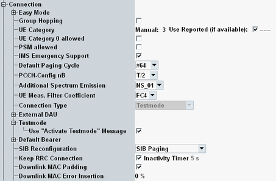
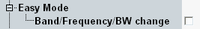
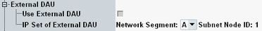
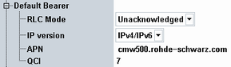

This section describes the following "Connection" settings.

The easy mode is available for a redirection or a blind handover within the signaling application.

With disabled easy mode, such an action can fail. For example, because the power level or the number of scheduled resource blocks is too low for a reliable exchange of the required signaling messages.
With enabled easy mode, critical settings are set to optimum values directly before the redirection or handover, to eliminate possible failure causes. After completion of the procedure, the settings are restored to the previous values. The final settings are the same with or without easy mode.
- Full UL and DL resource block allocation in all subframes
- Suitable UL and DL power level
- Modulation type QPSK
- TBS index 5
- DCI format 1A
- No AWGN, no error insertion
Specifies whether the easy mode is used if the band or the frequency or the cell bandwidth is changed.
Disable the easy mode if you want to test whether a redirection or a blind handover is successful under certain circumstances.
Enable the easy mode if you want to change settings reliably via a redirection or a blind handover.
Remote command:Enables or disables group hopping, specified in 3GPP TS 36.211.
Remote command:The UE category to be used by the R&S CMW can be set manually. Alternatively, it can be set automatically according to the UE category reported by the UE in the capability report.
"Manual" | If you want to set the category of your UE manually, enter it here. A value not reflecting the capabilities of the UE results in problems when trying to reach high data rates. |
"Use Reported (if available)" | If no reported value is available, the manually configured value is used. If a reported value is available, it is displayed for information. If the checkbox is enabled, the reported value is used. Otherwise the manually configured value is used. |
Specifies whether category 0 UEs are allowed to access the cell. This information is sent to the UE via broadcast in system information block 1.
Enabling the checkbox is relevant for machine-type communication (MTC). Option R&S CMW-KS590 is required.
Remote command:Specifies whether a UE request for power-saving mode (PSM) is accepted or rejected. See also 3GPP TS 24.301, section 5.3.11 "Power saving mode".
Enabling the checkbox is relevant for machine-type communication (MTC). Option R&S CMW-KS590 is required.
Remote command:Adds the optional field "ims-EmergencySupport-r9" to the system information block 1.
Remote command:Selects the cell-specific default paging cycle (32, 64, 128 or 256 radio frames). The value is signaled to the UE as "defaultPagingCycle" and used by the UE as input for the calculation of paging radio frame and subframe positions.
The R&S CMW considers the setting when sending paging messages.
Remote command:Configures the field "nB" in the "PCCH-Config" in system information block 2.
The value is used by the UE as input for the calculation of paging radio frame and paging occasion according to 3GPP TS 36.304, chapter 7.
The values T/64 to T/256 are only allowed for eMTC. And they are only allowed, if the default paging cycle has the same or a greater value. Example: T/64 needs cycle ≥ #64.
Remote command:The selected value is signaled to the UE within a system information block. It determines which additional ACLR and spectrum emission requirements have to be met and whether additional maximum power reduction (A-MPR) is allowed. For details, see 3GPP TS 36.521-1.
Remote command:This setting is only displayed on an SCC tab with enabled uplink. The selected value is signaled to the UE and determines additional ACLR and spectrum emission requirements for the SCC uplink.
Remote command:Some RRC messages to be sent to the UE for conformance tests contain an information element "filterCoefficient" = "fc4" or "fc8". This parameter selects the value to be sent.
The relevant value depends on the conformance test to be performed, see 3GPP TS 36.521 and 3GPP TS 36.508.
The "filterCoefficient" is used for uplink power control. Do not confuse it with "filterCoefficientRSRP" and "filterCoefficientRSRQ" for UE measurement reports, see "Filter Coefficient RSRP/RSRQ".
Remote command:Configures the connection type to be applied at the R&S CMW.
"Testmode" | The test mode uses only layer 1 and 2 of the protocol stack. Layer 3 is not used. This mode is suitable for any signaling tests not involving the data application unit (DAU). |
"Data Application" | The data application mode supports also layer 3, required for IP-based services. Select this mode for data application measurements with the DAU. See also "Data Tests and Voice over LTE" and "LTE IP-Based Data Tests". This value requires an installed DAU or an external DAU. |
Usually, the DAU is installed on the same R&S CMW as the LTE signaling application. If all expansion slots of this R&S CMW are occupied by other hardware options, a DAU installed on another R&S CMW can be used instead (external DAU).
- No DAU is installed
- Option R&S CMW-KA120 is available
- An Ethernet switch is installed (option R&S CMW‑B660x plus -B661x)

Enable the checkbox if you want to use an external DAU.
The two instruments must be connected via LAN. For details, refer to the DAU documentation.
Remote command:Select the values of the instrument where the external DAU is installed. You can check the values in the "Setup" dialog > "Misc" > "IP Subnet Config".
The two instruments must use the same network segment and must have different node IDs.
Remote command:When enabled, an "ACTIVATE TEST MODE" message is sent to the UE. No loop mode is requested. Test modes are specified in 3GPP TS 36.509 and 36.508.
Remote command:The default bearer settings are applied to all default bearers.
For connection type "Testmode", the RLC mode is configurable and the other default bearer settings are fixed. For connection type "Data Application", the default bearer settings are configurable.

Selects the RLC mode for downlink transmissions: unacknowledged mode (UM) or acknowledged mode (AM), see 3GPP TS 36.322.
Option R&S CMW-KS510 is required.
"UM" | There are no ARQ retransmissions on the RLC layer. |
"AM" | There are ARQ retransmissions on the RLC layer. |
Allowed IP versions. With "IPv4 only", for example, IPv6 is not used, even if requested by the UE.
Option R&S CMW-KS510 is required.
Remote command:Default access point name (APN), used if no APN is provided by the UE.
Remote command:Quality-of-service class identifier signaled to the UE. The values are specified in 3GPP TS 23.203.
Option R&S CMW-KS510 is required.
Remote command:Selects a method for information of an attached UE about changes in the system information, resulting from modified parameters.
The UE is, for example, informed about changes of the following parameters: maximum allowed uplink power P-Max, neighbor cell information, PUSCH open loop nominal power, SRS enable/disable, PRACH configuration index and default paging cycle.
"RRC Reconfiguration" | An RRC reconfiguration message is sent to the UE, containing the system information values in a mobility control information element. This method is only used if an RRC connection is established. Without RRC connection, SIB paging is used. |
"SIB Paging" | The UE is paged. This action triggers the UE to evaluate the broadcasted system information. |
Selects whether the RRC connection is kept or released after attach.
"Enabled" | The RRC connection established during attach is kept when the attach procedure is completed. For a subsequent connection setup, the already established RRC connection is used. So the connection setup is faster. When the dedicated bearer is released via a disconnect, the RRC connection is still kept. |
"Disabled" |
|
Activates or deactivates downlink padding at the MAC layer.
When no data (signaling or user data) is available from higher layers, an allocated channel can be filled with padding bits (DL padding on). This scenario is foreseen in many conformance tests.
Switching off DL padding is useful, for example, if the UE has problems to attach because the DL signal contains padding bits.
If UL dynamic scheduling is enabled, MAC padding is disabled and grayed out.
Remote command:Configures the rate of transport block errors to be inserted into the downlink data. This setting is useful for BLER measurements.
The parameter can be changed in all main connection states including "Connection Established".
Remote command: